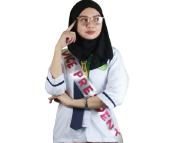

Antonette O. Albelda
For President
Academic Credentials
- Christian Foundation for Children and Aging (CFCA) - Scholar since year 2011-2016
- Southcom Elementary School - Zamboanga City Graduated with Special Awards Year- 2016
- 1st Runner up- Division Meet - Malikhaing Pagbasa- Zamboanga City- Year 2015
- Top Four Academic Achievers, Grade 7 with an Average of 94%
- Southcom National High School - Zamboanga City Year 2019
- Academic Excellence Award - Zamboanga del Sur National High School-Senior High School (Humanities and Social Sciences)- Year 2022
- League of Logic Debate - Champion Year 2025
- OWWA (Overseas Workers Welfare Administration) - Scholar since year 2024
- Student Category Provincial Level Local Government Quiz Bee Participant Year 2025
- Dean’s Lister Since Year 2023-2025
Extra-Curricular Achievements
- Girl Scout of the Philippines Year 2016-2017
- Mother Majorette - Year 2018
- Member of Student on Grant- Year 2023-2024
- Mock Debate Participant - HUMAN RIGHTS DAY between SCC Debate Varsity and POLISAYS ACAD CLUB-Year 2023
- Zamboanga Peninsula Regional Development Plan-Year 2024-Participant
- Top 8th in Binibini- Filipino Campus Camp
- Miss Eco Air- Year 2025
- Outstanding Examination Result with 90%. 30 of 50hrs SPARK Technical Training - DICT through ICT Literacy and Competency Development Bureau-Year 2025
- Member of SCC Debate Varsity - Year 2024
- Member of SCC The Masters of Ceremony (Rosters) - Since 2024-2025
Leadership and Service
- Service Award - Year 2014
- Leadership Award - Year 2014
- Class Section Representative- PATHFIT 1&3 Culmination - Year 2023
- Hugyaw 2025 Overall Champion
- Music Video - 2025 Padula - Facilitator, Editor, Videographer and Concept Director
- AgriKabataan: Ani ng Kinabukasan - Year 2025 Volunteer
- Vice President of Political Science Students Association of Young Statesmen - School Year 2024-2025
- President of Political Science Students Association of Young Statesmen - School Year 2025-2026
- Vice-Chair of Legislative Council - School Year 2025-2026
Jumana S. Salik
For Vice President

Academic Credentials
- 1st Human Resource Summit 2026 – Quiz Bee Category - Tangub City Global College,Tangub City (2026)
- PCDEB (The Philippine Council of Dean and Educators in Business) Regional BusinessSummit, Ozamis City- Participant (2025)
- PCDEB (The Philippine Council of Dean and Educators in Business) Regional BusinessSummit, Ozamis City- 1st Runner-Up Quiz Bee Competition (2025)
- Cordillera Youth Leadership Club (CYLC) Seminar "Legal Basis and HR Best Practices in Handling Employee Termination" (2025)
- Cordillera Youth Leadership Club (CYLC) Seminar "HR Approaches in Managing Difficult Employees and Workplace Conflicts" (2025)
- 2nd ZamPen Investment Conference “CEO Under 40 Session,” Pagadian City (2025)
- Handuraw: The ZamboSur Creatives Fair 2025 – Department of Trade and Industry (DTI). Pagadian City (2025)
- Business Week 2024 - Zamboanga del Sur (ZDS) Chamber of Commerce and Industry, PlazaLuz, Pagadian City (2024)
- DEAN LISTER (2024-2025)
- WITH HONORS (2022-2023)
- BEST in RESEARCH - Award for Research and Innovation in Science, Technology, Engineering, and Mathematics (2022-2023) Study Titled: "The Occupational Stress among Nurses in Aisah Medical Hospital,PagadianCity amidst COVID-19 Outbreak"
- GROUP LEADER - SHS Research Project on Inquiries, Investigations, and Immersion(2022-2023) Study Titled: "Smoking Habits among Junior High School of Pagadian Junior College Inc. Pagadian City"
- GROUP LEADER - Research Project in Science, Technology, Engineering, andMathematics 2 Research Project Study Titled: "Organic Floor Wax as an Alternative Mosquito Repellent" (2022-2023)
- Outstanding Performance in Filipino (2022-2023)
- ACADEMICACHIEVER (2021-2022)
- WITH HONORS (2020-2021)
- ACADEMIC ACHIEVER (2019-2020)
- District Schools Press Conference (DSPC) - EDITORIALWRITNG (2018-2019)
- School Based Press Conference (DSPC) - EDITORIAL WRITNG (2018-2019)
Extra-Curricular Achievements
- Results Director - Sports Category PADULA 2025
- Host - Research Colloquium TABO 2025 (2025)
- SCC ROTC Marching Band - LYRIST (2023-2024)
- SCC MEDICS – Member (2023-2024)
- Red Cross Youth (RCY) - Member (2022-2023)
- SHS and JHS Marching Band LYRIST - Pagadian Junior College Inc. (PJCI) Five (5) Consecutive S.Y. 2018-2023
Leadership and Service
- VICE PRESIDENT - Junior Philippine Council of Management (JPCM) 2026
- EVENT ORGANIZER – Music Festival DAY 2 TABO 2026
- EVENT ORGANIZER AND JUDGE – GAMESHOW TABO 2026
- LEGISLATIVE CHAIRMAN - Junior Philippine Council of Management (JPCM) (2025-2026)
- Human Resources Management MAYOR - Junior Philippine Council of Management (JPCM) 2025
- VICE PRESIDENT - INTERNAL - SCC Sports Organization (2025-2026)
- EVENT MANAGER SCC Sports Organization (2025-2025)
- CHIEF OPERATING OFFICER(COO) – Entrepreneurial Mind (2024-2025)
- CHIEF EXECUTIVE OFFICER (CEO) - SHS Entrepreneurship (2023)
- TREASURER - SHS MATH - SCIENCE CLUB (2022-2023)
- FACILITATOR - National Science Month 2022 - Pagadian City (2022)
- VICE PRESIDENT - SHS Science Wizard (2020-2023)
- TREASURER- SHS and JHS Classroom for Five (5) Consecutive S.Y. (2018-2023)
- SGG 1st COUNCILOR - Balangasan Cenrtral Elementary School (2016-2017)
Louiege Joy T. Javier
For Treasurer
Academic Credentials
- Graduated from Ballesteros Sr. Elementary School (Consistent Honor Student from Kinder – Grade 6)
- Graduated from Zamboanga Del Sur National Highschool (Consistent Honor Student from Grade 7 - Grade 10)
- Graduated from Zamboanga Del Sur National Highschool - Senior High School (Consistent Honor Student from Grade 11 – Grade 12)
- Currently Studying at Saint Columban College (Consistent Dean’s Lister for 3 consecutive semester)
- Civil Service Passer - Professional
Extra-Curricular Achievements
- Linggo ng Kabataan Quiz Bee - Champion (2025)
- Linggo ng Kabataan Essay Writing - 2nd Placer (2025)
- Regional Mid-Year Convention Academic Cup for Tax Compliance – 10th Placer
- PADULA Drama Excerpt Participant 2023 - Champion & 2025 - 1st placer
- Attended different Symposiums, Workshops, Seminars that helped me enhance my leadership capabilities and personal growth.
- Joined different Advocacy works & Voluntarism activities that helped me deepen my passion to serve.
- Served as an Emcee, Judge, Speaker at different activities and events.
Leadership and Service
- President - Zamboanga Del Sur National Highschool ABM strand (2022-2023)
- President - Grade 12 Henry Ford (2022 - 2023)
- President - Student Entrepreneur Club (2022 – 2023)
- President - Eco - Waste Management Organization (2022 – 2023)
- Vice President - WinS Organization (2022 – 2023)
- Board of Director - ZSNHS -SHS COMELEC (2021 – 2023)
- President - HIGALA – ARTS (2022 - 2023)
- Auditor - ADYA Organization (2022 – 2023)
- Member - ZSNHS - SHS Accounting Guild (2022 – 2023)
- Member - SIGA Organization (2022 – 2023)
- Vice President - SEAP City Chapter (2023 – 2025)
- President - SEAP SCC Chapter (2023 – 2025)
- Vice President - BBYO Federation (2022 – Current)
- Chief Head - BBYO Peace Building and Security (2022 – 2025)
- Chief Head – BBYO Economic Development (2025 – Current)
- VP Finance - SINAG Kabataang Pagadianon (2023 – 2025)
- Chief Head - SINAG Kabataang Pagadianon Economic Empowerment (2023 – 2025)
- Treasurer - Unlad Kabataan Program (2023 – 2024)
- Treasurer - Vineyard Circuit Fellowship (2023 – 2025)
- Executive Vice President - Pro Action Youth Organization (2023 – 2025)
- Public Relation & Marketing Officer - Artistic Young Society on Stage Entertainment (2024 – 2025)
- Honorary Head – Youth Entrepreneurship Services (2024 – 2025)
- Member – Drug Abuse Resistance Education Advocates (2024 – 2025)
- Chief Coordinator - Youth Pulse PH (2025 – Current)
- Chief Executive Officer – TABO Booth (Illumilicious) (2024)
- Organizer - PADULA (2024)
- Facilitator – PADULA CBE Literature (Balak & Drama Excerpt) (2025)
- Treasurer - SCC Inter-faith (2024 – 2025)
- Vice President - SCC Inter-faith Club (2025 – Current)
- Emcee Head - Peer Counselors' Circle (2023 – 2024)
- VP for Sponsorship – Junior Philippine Institute of Accountants (2025 – Current) - Gathered a total of 13 Sponsors and received an approximate total of ₱1,700,000 worth of monetary donations , products, gift certificates.
- Adviser - Vineyard Circuit Fellowship (2026 – Current)
- Guest Speaker – (SMC) Southern Mindanao Colleges Rotary International Club (Financial Literacy)
Jaypee M. Salon
For Mass Media Officer
Academic Credentials
- Consistent Dean’s Lister
- Boy Scout Training -2017 at SES
- Basic First Aid and Basic Life Support Training Completer (2025)
- National Commission for Culture and the Arts (NCCA) Seminar-Workshop (November 2025) “Mga Durungawan sa Kulturang Pilipino: A Culture-Based Education Training Service on Philippine Weaving, Traditions, Performing Arts and Traditional Games”
- Arcer Computer Training – Outstanding Graduate (2017)
- ROTC RAATI Champion (95.77 Rating) - Theoretical Platoon
Extra-Curricular Achievements
- Jazz Chant Performer - District Meet (Elementary level)
- Table Tennis Player - District Meet (Elementary level)
- Padula Street Dance Champion – March 2024
- Padula Street Dance Champion – October 2024
- Padula Street Dance Champion – October 2025
- Pathfit Street Dance Champion – 2024
- Orgs Fair Street Dance Champion – 2025
- Dole Batang Malaya Flash Mob Champion
- HUGYAW Overall Champion – October 2024
- President Got Talent Champion
- Dopim Performers – 2024
- Siay National High School Mr. Intramural 2023 - Mr. Witty
Leadership and Service
- President, The League of Physical •Education Students (2024–2025)
- SSG Vice President, Siay National High School (2022–2023)
- Supreme Pupil Government Organization- SCES Business Manager
- Kalinaw Dance Ensemble – Mass Media Officer (2024–2025)
- Kalinaw Dance Ensemble – Secretary General (2025–2026)
- Pathfit Culmination 2025 – Head Event Stage Manager/ Organizer
- Head, Human Resources Office – SCC Student Leadership Week
- Siay National High School Performing Arts (SINAHI) Officer
- Youth for Christ Member
- Youth Ministry of Siay Member
- Volunteer, Project Baybay by Granscil
- Volunteer during the CES Relieve Goods Operation at Kumalarang ZDS
Kristine Jane F. Candia
For Mass Media Officer
Academic Credentials
- With Honors graduate of Zamboanga del Sur National High School, Main Campus (Science, Technology, and Engineering Program - STEP)
- With High Honors graduate of Zamboanga del Sur National High School - Senior High School
- Consistent Dean’s Lister
Extra-Curricular Achievements
- ASMEPPS Regional Math Trivia – 3rd Placer (2022)
- ASMEPPS National Math Trivia – 7th Placer (2023)
- Division Festival of Talents (DFOT) - 3-hour Research Proposal Writing – 4th Place (2022-2023)
Leadership and Service
- Incumbent GranScil Auditor
- President, SciMatrix Society (2024-2025)
- Department Board Secretary, CTEAS (2024-2025)
- CTEAS Representative, Obra Graphia (2025-2026)
- Classroom President, Senior High School (2022-2023)
- Secretary, ZSNHS-SHS Barkada Kontra Droga (2022-2023)
- Accomplished Student Leaders’ Week Delegate as Librarian (2024)
- Accomplished Student Leaders' Week Delegate as Treasurer (2025)